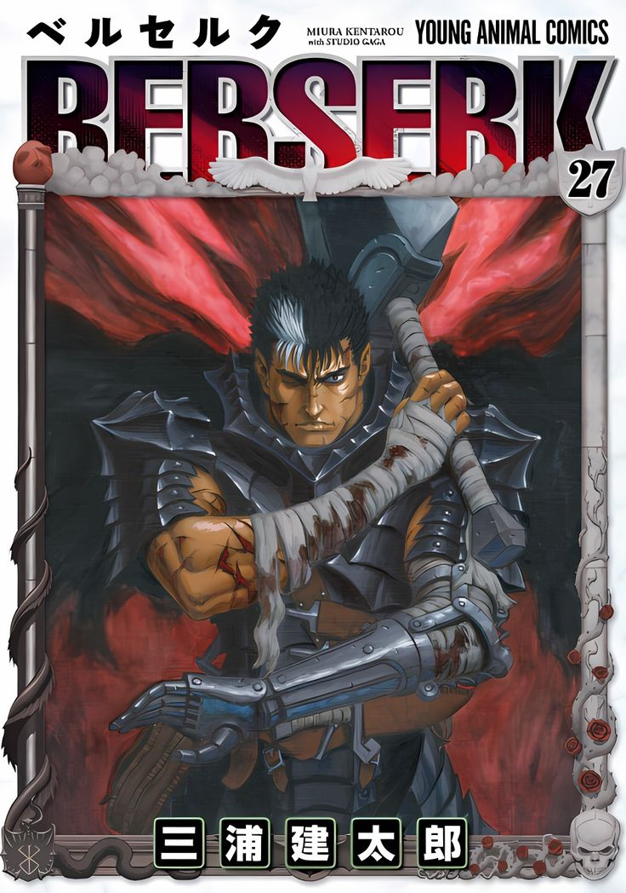

Berserk
is a Japanese dark fantasy manga series illustrated and written by Kentaro Miura. Place in a medieval Europe-divine the narrative centers on the characters of Guts dark fantasy world, a lone mercenary, and Griffith, the leader of a mercenary group known as the Band of the Hawk. Motifs of camaraderie, isolation, as well as the question of whether mankind is basically good or bad pervade the narrative, as it investigates both the very best and worst of human nature. Both anime and the manga are noticed for their utilization of sexual content and heavy violence.
